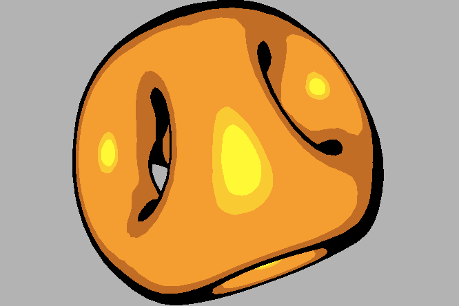
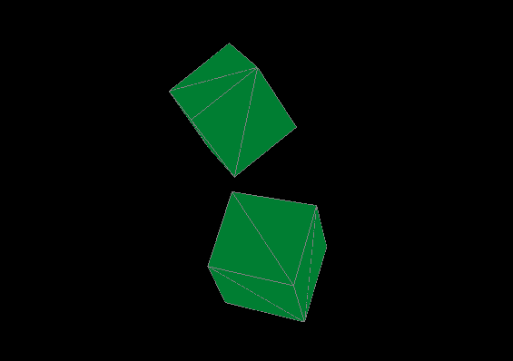
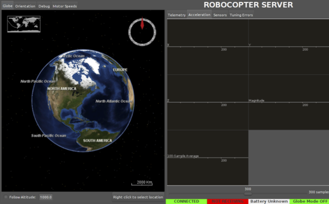

The
App Engine Search API is an expressive API that allows
users to perform advanced search queries on large, eventually-consistent
indexes of data. Supported features include multilingual text analysis,
automatic tokenization, a fully-featured boolean query language, numeric
and date comparisons and geohashing.
I worked on a three-engineer team at Google to build the Search API
from July 2012 to present.

Button is an
interface for controlling the color and brightness of lights in your home. It
turns your Android device into a motion controller, where one dimension is
hue and the other is saturation.
Button acts as a frontend to the dimsum light controller, an
application for a Raspberry Pi and an Arduino that allows users to control
RGB LEDs from a web interface or from Button.
Button was built as a personal project in September 2012.

subd is
a software package for evaluating Loop and Catmull-Clarke subdivision
surfaces. It supports arbitrary levels of subdivision (limited only by
available system memory) normal interpolation and cel shading.
subd was created as a final project for Michael Reed's Computer-Aided
Geometric Design course in Spring 2012

Feynstein is
a programming language designed for making physical simulation accessible
to those who want to experiment with physics but who do not have
significant experience in computer science. It makes the process of going
from an experiment’s conception to its simulation simple and fast, and
provides the end user with accurate video renderings, either in a file or
on screen.
I was a member of the 5-person team that built Feynstein for Alfred Aho’s
Programming Languages course at Columbia in Spring 2011. I was responsible
for the compiler and geometry generation for the standard library of the
language.

Robocopter
is a novel system architecture for quadricopter control in which the
quadricopter can behave near-autonomously and processing is handled by an
Android device on the quadricopter. The Android device communicates with a
laptop, receiving commands from the host and sending imagery and sensor
data back. The quadricopter was 3D printed and assembled by us.
I created Robocopter with Benjamin Bardin under the advisement of
Professor Paul Blaer as a three-semester faculty-assisted undergraduate
research project, Spring 2010 — Spring 2011.